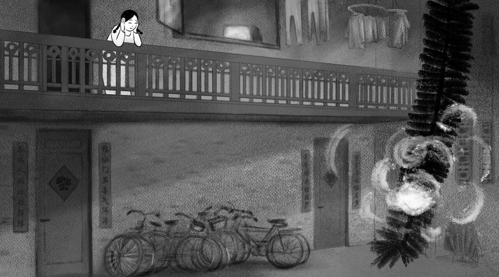
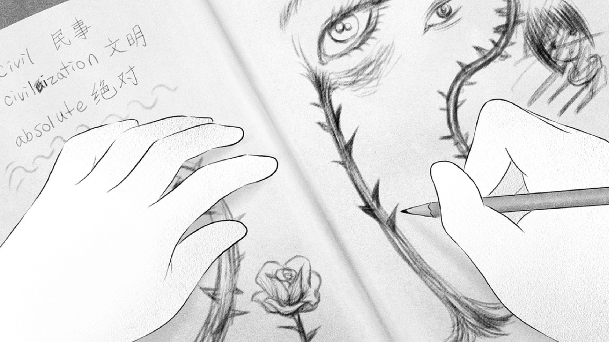
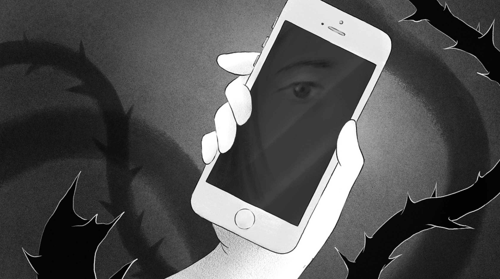

“A Grieving Heart” is a 12-minute animated short film about an immigrant woman examining her past in the wake of her American ex-boyfriend’s death.
This film features a first-person confessional voiceover, black and white 2D animated imagery, and an original score. The narrator reflects on her Chinese-American upbringing, her past relationship, and her current grief. The film explores how love and loss impact the ways she confronts her immigrant identity, memories, insecurities, and regrets.
A GRIEVING HEART (2025)
12-min animated short dir. by Wendy Cong Zhao
original score by Frances Chang
More about A GRIEVING HEART
premiered via Woodstock Film Festival, NY.
LABOCINE
Animation Magazine


